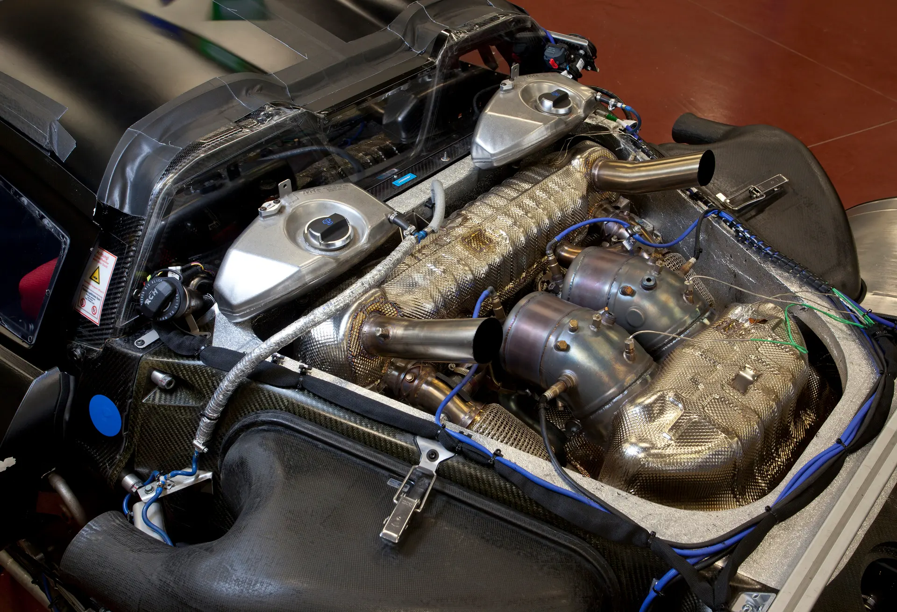
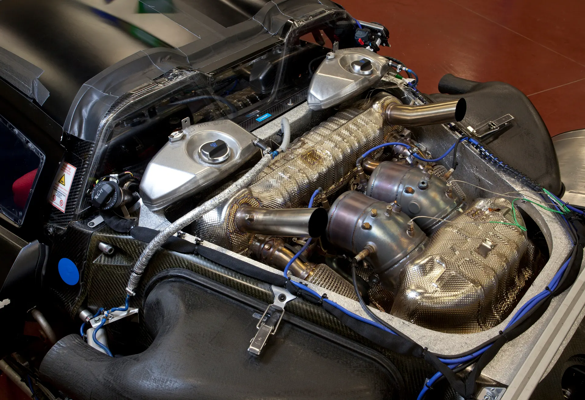

Descripción del Porsche 918 Spyder
El Porsche 918 Spyder es un superdeportivo híbrido enchufable fabricado por Porsche. Combina un motor V8 de 4.6 litros con dos motores eléctricos para ofrecer un rendimiento excepcional y eficiencia energética.
Características
- Motor V8 de 4.6 litros
- Dos motores eléctricos
- Potencia combinada de 887 caballos de fuerza
- Aceleración de 0 a 100 km/h en 2.6 segundos
- Velocidad máxima de 340 km/h
Galería de Imágenes
 
